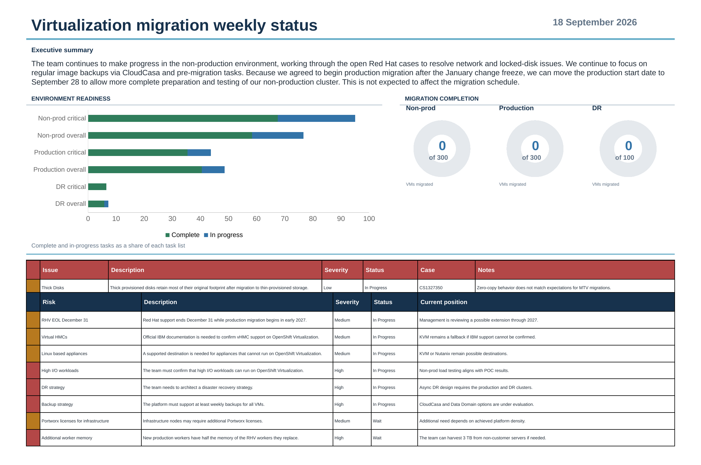

Status report · Visual communication
Virtualization migration weekly status
A one-slide project update combining an executive summary, environment readiness, migration counts, and a register of issues and risks.

About this sample
This report presents a technical migration at a glance. It separates environment readiness from migration completion and makes the severity and status of issues and risks explicit.
Text version of the report
Transcribed from the supplied presentation. The text version includes all issue and risk rows shown in the full report visual.
Executive summary
The team continues to make progress in the non-production environment, working through the open Red Hat cases to resolve network and locked-disk issues. We continue to focus on regular image backups via CloudCasa and pre-migration tasks. Because we agreed to begin production migration after the January change freeze, we can move the production start date to September 28 to allow more complete preparation and testing of our non-production cluster. This is not expected to affect the migration schedule.
Environment readiness
Complete and in-progress tasks as a share of each task list.
| Task list | Complete | In progress |
|---|---|---|
| Non-prod critical | 67.5% | 27.5% |
| Non-prod overall | 58.4% | 18.2% |
| Production critical | 35.4% | 8.3% |
| Production overall | 40.5% | 8.1% |
| DR critical | 6.5% | 0.0001% |
| DR overall | 5.8% | 1.4% |
Values reproduce the embedded data, including the near-zero 0.0001% entry for DR critical tasks in progress.
Migration completion
- Non-prod: 0 of 300 VMs migrated.
- Production: 0 of 300 VMs migrated.
- DR: 0 of 100 VMs migrated.
Issue
| Issue | Description | Severity | Status | Case | Notes |
|---|---|---|---|---|---|
| Thick Disks | Thick provisioned disks retain most of their original footprint after migration to thin-provisioned storage. | Low | In Progress | CS1327350 | Zero-copy behavior does not match expectations for MTV migrations. |
Risks
| Risk | Description | Severity | Status | Current position |
|---|---|---|---|---|
| RHV EOL December 31 | Red Hat support ends December 31 while production migration begins in early 2027. | Medium | In Progress | Management is reviewing a possible extension through 2027. |
| Virtual HMCs | Official IBM documentation is needed to confirm vHMC support on OpenShift Virtualization. | Medium | In Progress | KVM remains a fallback if IBM support cannot be confirmed. |
| Linux based appliances | A supported destination is needed for appliances that cannot run on OpenShift Virtualization. | Medium | In Progress | KVM or Nutanix remain possible destinations. |
| High I/O workloads | The team must confirm that high I/O workloads can run on OpenShift Virtualization. | High | In Progress | Non-prod load testing aligns with POC results. |
| DR strategy | The team needs to architect a disaster recovery strategy. | High | In Progress | Async DR design requires the production and DR clusters. |
| Backup strategy | The platform must support at least weekly backups for all VMs. | High | In Progress | CloudCasa and Data Domain options are under evaluation. |
| Portworx licenses for infrastructure | Infrastructure nodes may require additional Portworx licenses. | Medium | Wait | Additional need depends on achieved platform density. |
| Additional worker memory | New production workers have half the memory of the RHV workers they replace. | High | Wait | The team can harvest 3 TB from non-customer servers if needed. |